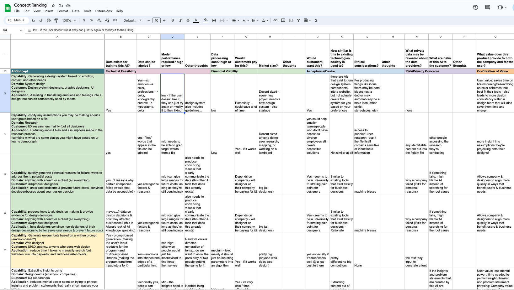
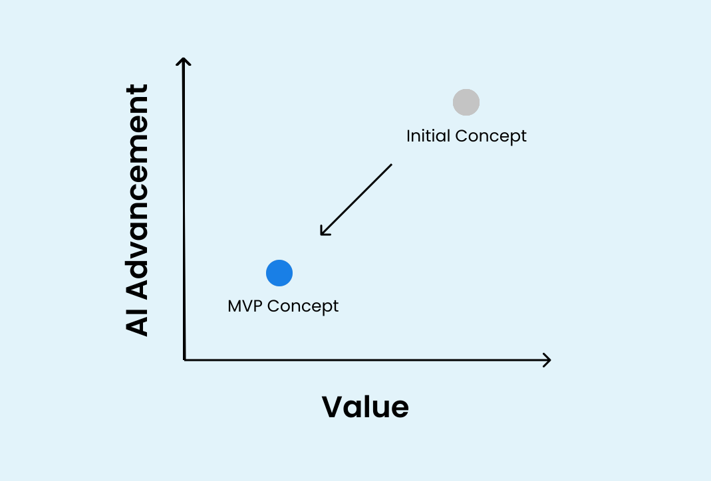
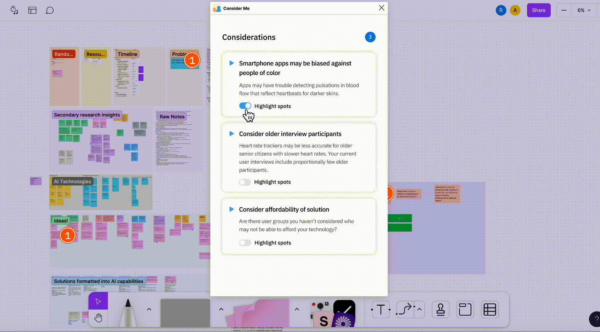
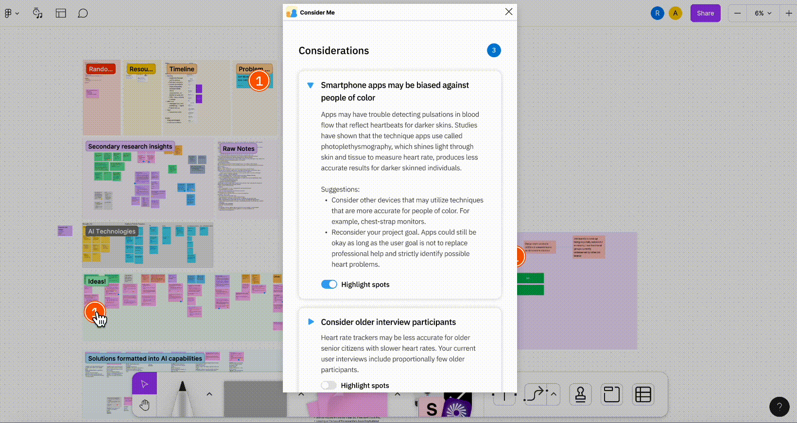

Embedded bias is everywhere--whether we realize it or not. From recruiting, to autonomous vehicles, to biometric ID scanners, to soap dispensers, it’s frequent that entire user groups are overlooked or left behind throughout the design process.
The theme for XHacks 2023, a design-based hackathon held at Carnegie Mellon University each year, was all about “Design with AI”--utilizing AI to improve workflows in the design space.
Our solution aims to pinpoint bias or assumptions designers may be making from the start of the design process, so neither they nor their developers & entire organization waste time, energy, and money later on down the line. Consider Me, a Figma/Figjam add-on, allows designers to use their current board, problem statement, target user groups, as well as optional information such as demographics of the designers working on the project and users being interviewed, the goal of the project, to generate a list of considerations for the project team to focus on (e.g. “Consider older interview participants”).
Biases in the design process are difficult to catch, and even harder to fix later on in the design process.
We had three high-level problems we needed to solve:
-
How do we ensure we’re addressing real pain points designers experience rather than projecting our own assumptions to create an issue?
-
How do we make this Figma plugin desirable to designers regardless of their stage of development in the design process?
-
How do we address security and privacy issues with accessing potentially sensitive information in Figma and Figjam files in order to generate considerations?
I collaborated with Alana Wu and Robyn Lee to conduct secondary research in order to identify and map out common issues designers faced in the industry, ending up with the following statement to guide our design process:
“How might we help designers become more cognizant of their own biases and oversights in the user research process?”
Planning & Scope Definition
We first had to define the concept we wanted to build. We prioritized the research and design process in the context of the short time we had due to the hackathon.
Design Execution & Specification
We designed this concept to be a Figma plugin so it could be easily accessible by designers, regardless of employment. We executed user journeys, interviews, wireframes, prototypes, design specs, and received feedback from professors and designers in industry.
Leadership
I presented the concept to over 50 students, professors, and designers, and led the writing of our design specification document. I also got to lead the logo development for our concept.
Explore ideas
How we built it
After we conducted baseline research on the design industry and brainstormed ways to introduce AI capabilities to the space, we began mapping our concepts and feasibility.

Then we chose a solution by considering the technical feasibility, financial viability, desire from users, risk and privacy concerns, and the co-creation of value.
A couple of discussions with designers and professors led to multiple early-stage insights:
Creation of value and usage of AI advancement
We initially wanted to utilize dense data to provide detailed design recommendations for designers. However, after our informal critique, we decided to shift from a high risk, high value solution to a low risk, user-driven solution for our MVP. This would ensure that our concept wasn't based around AI surpassing its current capabilities.

Emotional interaction with the user
Our original Figma concept took a more harsh approach when outputting changes to a designer’s Figma file. The concept was that designers would input demographic information about the team working on their project, as well as project details, so our Figma plugin could point out places they were making assumptions or missing user groups.
After talking to a few designers and professors, we realized the importance of crafting a safe and respectful environment to design in with our plugin. We wanted our plugin to not call out designers, but rather, bring their attention to potential considerations they should be aware of moving forward in the design process. This shifted the language and structure of our generated considerations in the final prototype.
Security and privacy concerns
After talking to designers and explaining our high-level concept, we realized the core value of our Figma plugin was dependent on being able to parse through the user’s file.
We soon decided we wanted the data collection process for our plugin to be two-pronged:
-
Users can input information such as research topic, problem statement, target user groups, implementation tools, and other high-level details of their UX research
-
Users can also input demographic information of the designers working on the project and users being interviewed
All information was optional, making it so that the designer wouldn’t have to modify their Figma file nor compromise sensitive information in order to access insights from our plugin.
Fill in project information
Designers can autofill or manually fill in project information and demographics of the team working on this specific project.
Browse generated considerations

Once considerations are generated, they can expand each one to see more specifics as well as suggestions on how to make their process even better.
Spotlight considerations on Figma/Figjam board

Designers are also able to see the spotlighted considerations on their board, and can examine which blocks of text or data prompted a specific consideration.
A deeper understanding
Ethics, Technology, Paradoxes
Throughout this project, we learned a lot about failing fast and iterating quickly. With 20 hours of work spread across a weekend, we didn’t have a lot of time to flesh out this idea as much as we would have liked. However, we learned about:
-
Ethical considerations: how much information do we have about our users and how do we establish a clear line of communication with the users such that they know what personal data we’re utilizing in our Figma plugin?
-
Technical feasibility: how does the current state of natural language processing and language learning models facilitate the MVP of our concept? Is it even feasible?
-
Paradoxical cycles: how can we ensure our plugin doesn’t worsen or extend inherent or blatant biases in the considerations we’re generating for users?
Concept generation and wireframing is only the first step. With more time, we hope to iterate this product and concept withe more data and market research, and make the world of design less biased and more accessible, one consideration at a time.